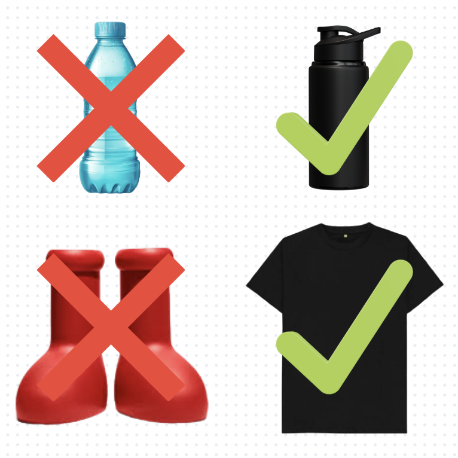
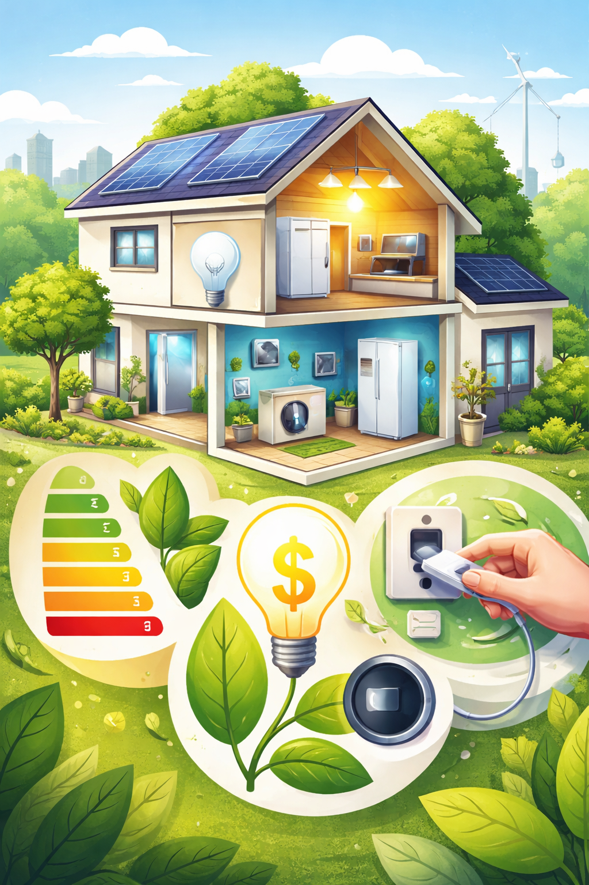
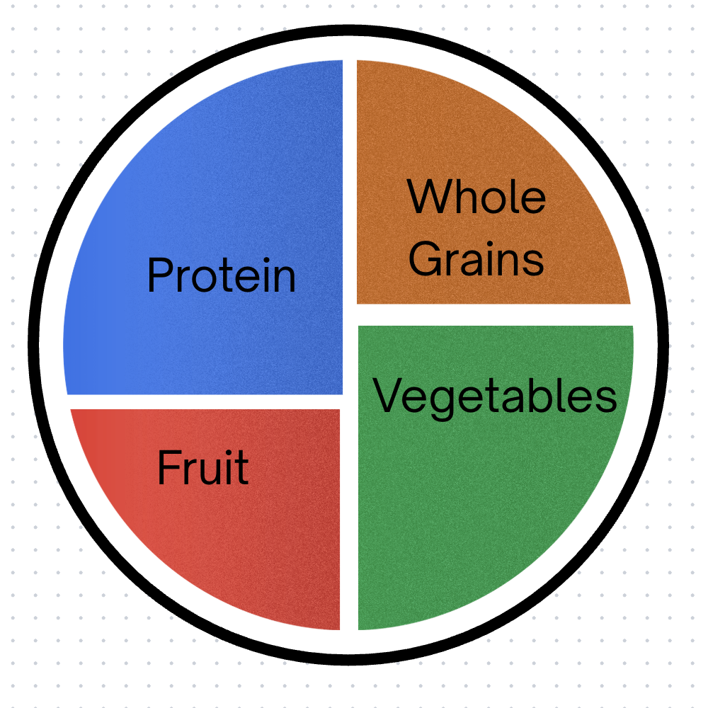
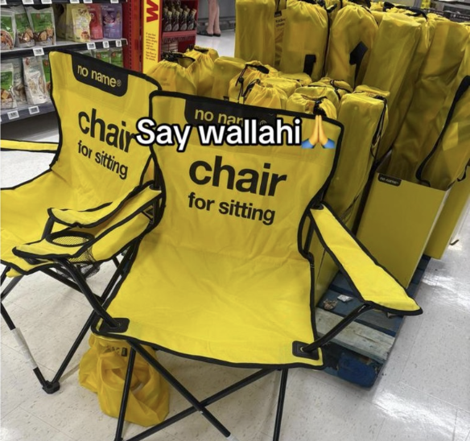
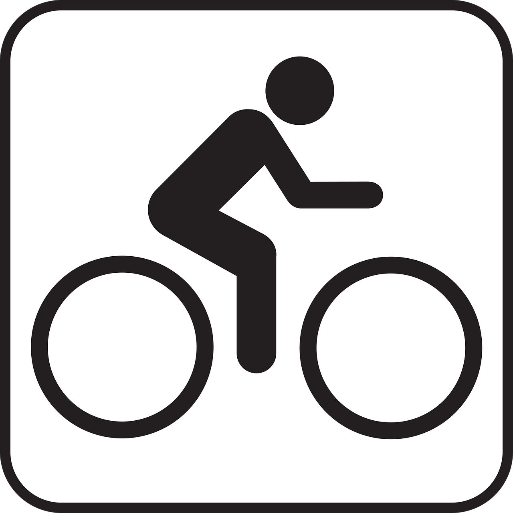

There are many simple steps you can take to live a more sustainable life, from reducing waste to conserving energy. Here are some practical tips to get you started.
Support EcoSwap.
Switching to reusable items like bottles, bags, and containers reduces long-term waste production significantly.

Modern homes consume more energy than ever. Being mindful of usage, upgrading to efficient appliances, and reducing idle electricity can drastically lower your footprint.

Even small dietary changes like reducing meat intake or avoiding food waste contribute to environmental sustainability. Conscious consumption matters.

Buying less and choosing quality over quantity reduces production demand and waste. Minimalism aligns naturally with eco-conscious living.

Walking, cycling, or using public transport when possible reduces emissions. Even occasional changes make a difference over time.
